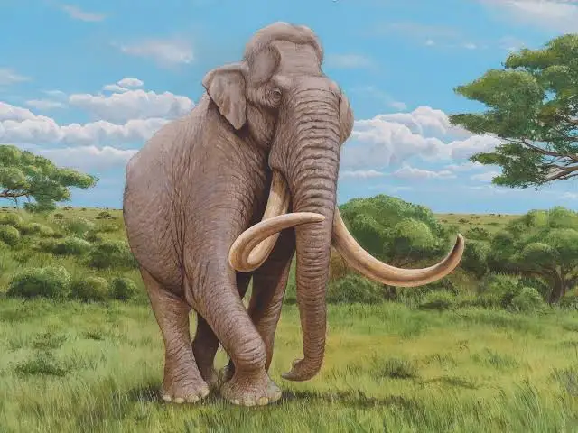

Información
Nombre científico
Mammuthus meridionalis
Periodo
Pleistoceno inferior
Encontrado en
Cueva Victoria
Altura
4 metros en la cruz
Peso
10 toneladas
Descripción
M. meridionalis es uno de los mayores proboscideos que haya vivido, junto con otras especies gigantes de mamuts, y el primitivo Deinotherium. Tenía robustos colmillos curvados, comunes a los mamuts. Sus molares tenían coronas bajas y un pequeño número de bordes de esmalte grueso, adaptados a una dieta forestal de hojas y ramas, lo que indica que vivía en un clima relativamente cálido que hace probable que careciera de una densa capa de pelo. Es probablemente uno de los mayores animales que han vivido en esta región.